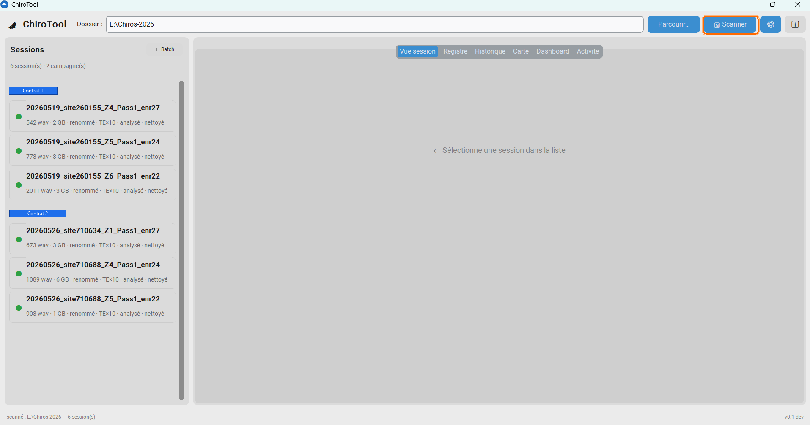
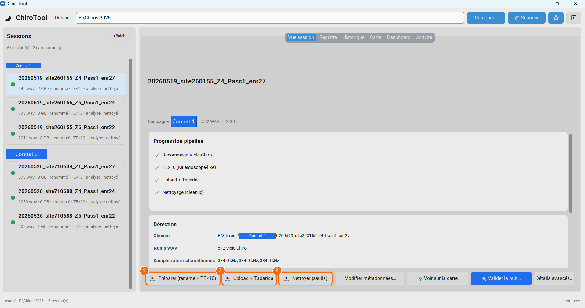
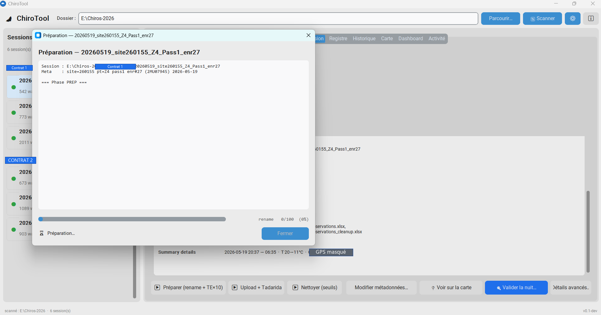
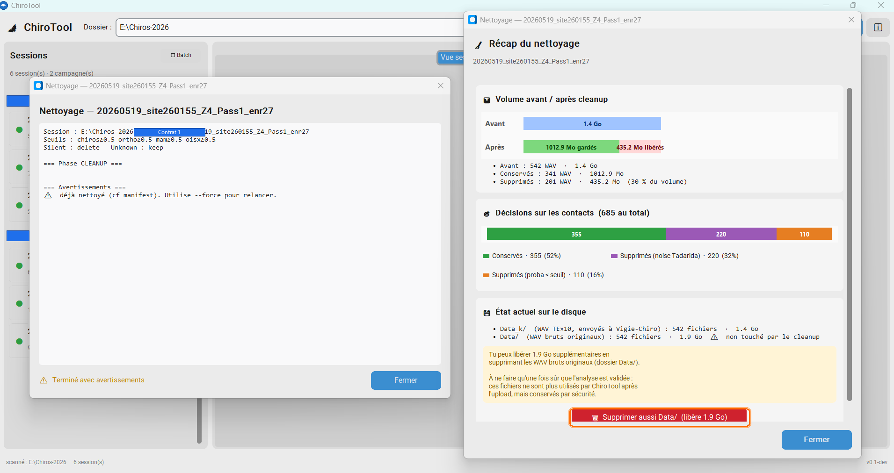
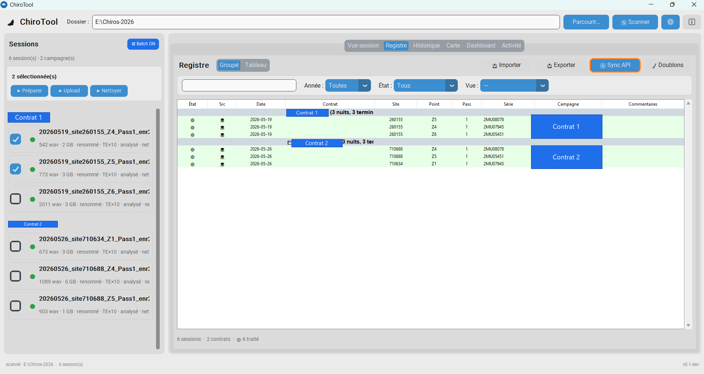
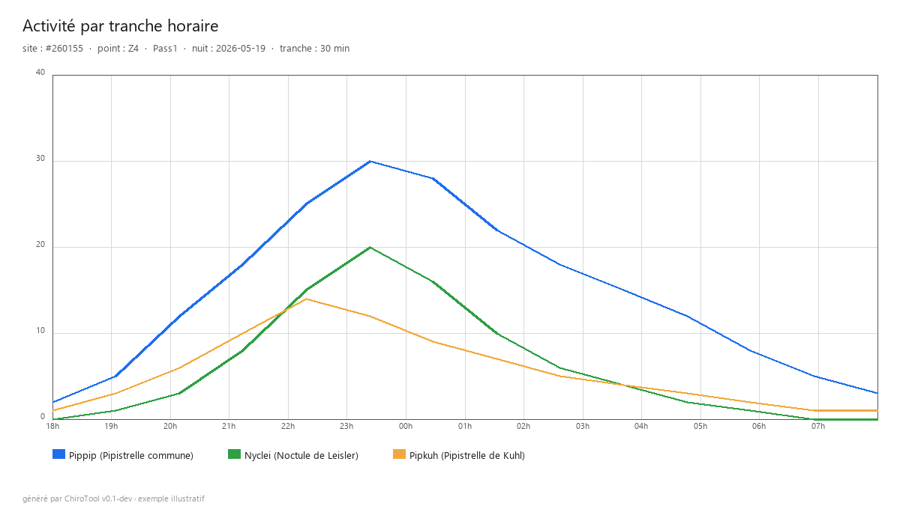
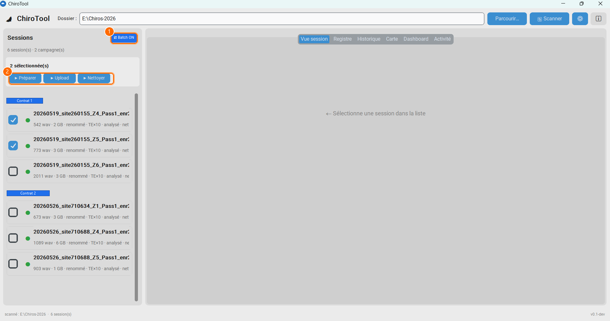

Logiciel libre pour le protocole Vigie-Chiro Point Fixe (MNHN).
Renommage, expansion temporelle, upload, analyse Tadarida, nettoyage sécurisé, validation et registre : ChiroTool regroupe toute la chaîne dans une application locale et portable. Vous gardez la main sur ce qui compte — la validation scientifique des espèces.

Sur une nuit Point Fixe, le parcours manuel enchaîne renommage, TE×10, portail, upload de centaines de WAV, attente Tadarida, tableur et nettoyage. Sur une campagne de dizaines de contrats, ce sont des journées perdues — et des erreurs faciles.
Estimations indicatives selon le matériel et la connexion. Plus la campagne est grande, plus l’automatisation fait économiser de temps — et d’erreurs de saisie.
La v0.6 répond à l’usage LPO / MNHN (validation 10 %→75 % nuit par nuit) et fiabilise le parcours point ↔ carte ↔ serveur après un upload partiel ou une analyse relancée sur le portail.
Scission lazy en 1 CSV par nuit biologique (Nuit{n}_…) pour la méthode 10 %→75 %.
Diagnostic local ↔ serveur (couverture WAV, flags, fetch xlsx, trigger Tadarida avec confirmations).
Choisir un point sur la carte (5 km) pour les meta ; recentrer une nuit sans recharger toute la France.
Paquet portable Data_k ± Data + métadonnées pour un collègue ou un poste hors ligne.
_VuLecture des CSV validés ChiroSurf + filtre proba Tadarida minimale.
T° du Summary préremplies ; vent / couverture optionnels (complétables sur le portail).
Métadonnées détectées (site, point, passage, série) et noms au format Vigie-Chiro. Wildlife, Passive/Bat Recorder, AudioMoth expandé.
Intégrée, reproduisant Kaleidoscope bit-à-bit. Accélération Rust optionnelle, fallback Python transparent.
Participation API, upload parallèle avec reprise, suivi de l’analyse et récupération des résultats. Météo non bloquante.
Diagnostic local ↔ serveur (couverture WAV, flags, fetch xlsx, trigger Tadarida) pour reprendre une nuit en ⏳.
Seuils par groupe (chiros, orthos, micromam, oiseaux), aperçu chiffré et garde-fou mass-delete.
Contacts filtrables, ChiroSurf multi-nuits (1 CSV / nuit bio), taxons, envoi des identifications vers le portail.
Activité horaire, niveaux de référence, source xlsx ou _Vu, filtre proba Tadarida.
Suivi multi-sites / multi-contrats, export CSV/xlsx, paquet portable Data_k ± Data pour un collègue.
Choisir un point (5 km) pour les meta, recentrer une nuit (pin rose), créer ou rejoindre un carré STOC.
Un .exe, aucune installation. Mode portable (clé USB) ou config utilisateur. Données chez vous.
Déposez vos dossiers de nuits, scannez, cliquez « Préparer » : renommage + expansion temporelle.
L’assistant pré-remplit la participation (météo optionnelle). ChiroTool uploade, suit l’analyse et récupère les observations. En cas de coupure : Vérifier / Réparer.
Aperçu des suppressions, validation contact-par-contact ou multi-nuits ChiroSurf (10 %→75 %), envoi des identifications.






Que vous livriez un marché public ou que vous suiviez un réseau de points, ChiroTool réduit la friction opérationnelle sans imposer le cloud.
Chaîne reproductible, registre de campagne, exports pour rapports, moins de temps mort entre la SD et le rendu client.
Outil libre, portable sur poste partagé, onboarding simple, tutoriel PDF pour former les bénévoles.
Focus sur la validation des espèces : le reste de la mécanique Point Fixe est automatisé.
Tout enregistreur dont les fichiers sont nommés
…AAAAMMJJ_HHMMSS….wav.
| Famille | Modèles / notes |
|---|---|
| Wildlife Acoustics | SM2 / SM3 / SM4(BAT) / Mini Bat |
| Autres horodatés | Passive Recorder, Bat Recorder, etc. |
| AudioMoth | Fichiers déjà expandés via l’AudioMoth Configuration App (File → Expand). ChiroTool assure ensuite renommage + TE×10 (alternative à Kaleidoscope pour l’AudioMoth). |
Formats à noms non datés (ex. Peersonic, Pettersson D500x) : renommage préalable requis ; pas encore pris en charge directement.
Logiciel portable Windows (≈ 34 Mo). Aucune installation, aucun droit administrateur. Traitez une nuit test dès ce soir.
Au premier lancement, Windows SmartScreen peut afficher un avertissement (logiciel libre non signé) : cliquez sur « Informations complémentaires » puis « Exécuter quand même ». Le code est entièrement ouvert et vérifiable sur GitHub. Retours et idées bienvenus via les issues.